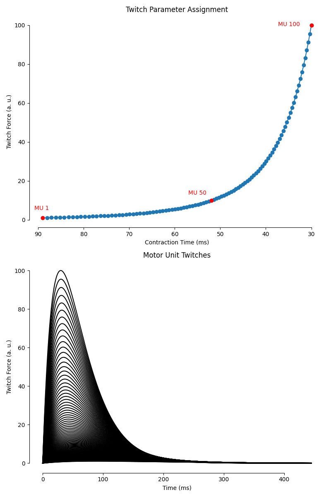
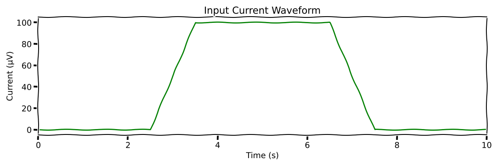
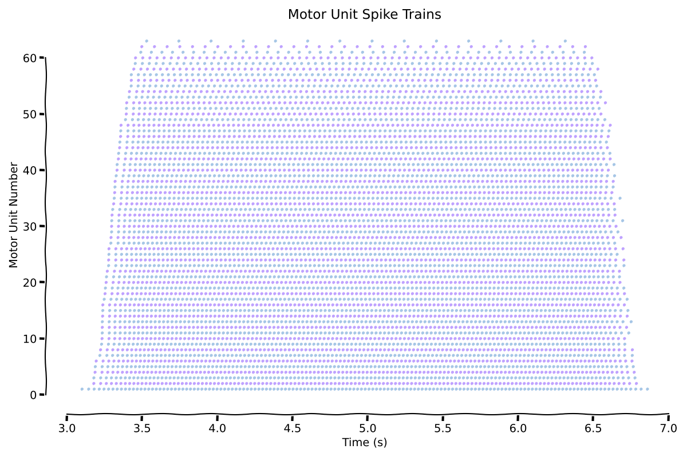
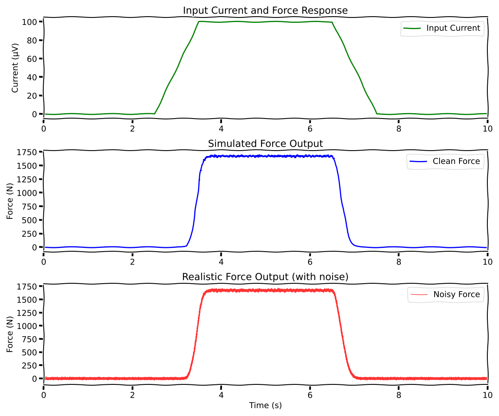

Note
Go to the end to download the full example code.
Force Generation#
After generating spike trains from motor neuron pools, the next step is to simulate the force output produced by the muscle. MyoGen provides a comprehensive force model based on the classic Fuglevand et al. (1993) approach.
Note
The force model converts spike trains into force by simulating individual motor unit twitches and their summation. Each motor unit has unique twitch characteristics (amplitude, duration) that depend on its recruitment threshold.
The force model includes:
Motor unit twitch characteristics: Peak force and contraction time based on recruitment thresholds
Nonlinear gain modulation: Force scaling based on inter-pulse intervals (discharge rate)
Temporal summation: Realistic force buildup from overlapping twitches
Physiological scaling: Realistic force ranges and dynamics
References#
Import Libraries#
from pathlib import Path
import numpy as np
import matplotlib.pyplot as plt
from myogen import simulator
from myogen.simulator.core.force.force_model import ForceModel
from myogen.utils.plotting.force import (
plot_twitch_parameter_assignment,
plot_twitches,
)
from myogen.utils.plotting import plot_spike_trains
from myogen.utils.currents import create_trapezoid_current
Define Parameters#
The force model requires several key parameters:
recruitment_thresholds: Motor unit recruitment thresholdsrecording_frequency__Hz: Sampling frequency for force simulationlongest_duration_rise_time__ms: Maximum twitch rise timecontraction_time_range: Range of contraction times across motor units
For demonstration, we’ll also create input currents and simulate the complete pipeline from current input to force output.
# Create results directory
save_path = Path("./results")
save_path.mkdir(exist_ok=True)
# Motor unit pool parameters
n_motor_units = 100
recruitment_range = 100 # Recruitment range (max_threshold / min_threshold)
# Force model parameters
recording_frequency__Hz = 10000.0 # 10 kHz sampling rate
longest_duration_rise_time__ms = 90.0 # Maximum twitch rise time
contraction_time_range = 3.0 # Contraction time range factor
# Simulation parameters
simulation_duration__ms = 10000.0 # 10 seconds
timestep__ms = 0.1 # 0.1 ms time step
t_points = int(simulation_duration__ms / timestep__ms)
Generate Recruitment Thresholds#
First, we need to generate recruitment thresholds for our motor unit pool. These will determine both the activation order and the force characteristics of each motor unit.
recruitment_thresholds, _ = simulator.generate_mu_recruitment_thresholds(
N=n_motor_units, recruitment_range__ratio=recruitment_range
)
Create Force Model#
The force model calculates individual motor unit twitch properties based on recruitment thresholds and physiological scaling rules.
force_model = ForceModel(
recruitment_thresholds=recruitment_thresholds,
recording_frequency__Hz=recording_frequency__Hz,
longest_duration_rise_time__ms=longest_duration_rise_time__ms,
contraction_time_range__unitless=contraction_time_range,
)
# Display force model statistics
print(f"\nForce model statistics:")
print(f" - Number of motor units: {force_model._number_of_neurons}")
print(f" - Recruitment ratio: {force_model._recruitment_ratio:.1f}")
print(
f" - Peak force range: {force_model.peak_twitch_forces__unitless[0]:.3f} - {force_model.peak_twitch_forces__unitless[-1]:.3f}"
)
print(
f" - Contraction time range: {force_model.contraction_times__samples[0]:.1f} - {force_model.contraction_times__samples[-1]:.1f} samples"
)
Force model statistics:
- Number of motor units: 100
- Recruitment ratio: 100.0
- Peak force range: 1.047 - 100.000
- Contraction time range: 890.2 - 300.0 samples
Visualize Twitch Parameter Assignment#
The force model assigns twitch parameters (peak force and contraction time) to each motor unit based on its recruitment threshold. Let’s visualize this relationship for a subset of motor units.
# Suppress font warnings to keep output clean
import warnings
import logging
warnings.filterwarnings("ignore", message=".*Font family.*not found.*")
warnings.filterwarnings("ignore", message=".*findfont.*")
logging.getLogger("matplotlib.font_manager").setLevel(logging.ERROR)
plt.figure(figsize=(8, 12))
ax1 = plt.subplot(2, 1, 1)
plot_twitch_parameter_assignment(
force_model, ax1, [1, 50, 100], flip_x=True, apply_default_formatting=True
)
ax1.set_title("Twitch Parameter Assignment")
ax2 = plt.subplot(2, 1, 2)
plot_twitches(force_model, ax2, apply_default_formatting=True)
ax2.set_title("Motor Unit Twitches")
plt.tight_layout()
plt.show()

Generate Input Current#
To demonstrate force generation, we’ll create a trapezoid current that will drive motor unit recruitment and firing patterns.
# Parameters for trapezoid current
trap_amplitude = 100.0 # Peak amplitude
trap_rise_time = 1000.0 # Rise duration (ms)
trap_plateau_time = 3000.0 # Plateau duration (ms)
trap_fall_time = 1000.0 # Fall duration (ms)
trap_offset = 0.0 # Baseline current
trap_delay = 2500.0 # Initial delay (ms)
trapezoid_current = create_trapezoid_current(
n_pools=1,
t_points=t_points,
timestep__ms=timestep__ms,
amplitudes__muV=[trap_amplitude],
rise_times__ms=[trap_rise_time],
plateau_times__ms=[trap_plateau_time],
fall_times__ms=[trap_fall_time],
offsets__muV=[trap_offset],
delays__ms=[trap_delay],
)
# Plot the input current
plt.figure(figsize=(12, 4))
with plt.xkcd():
time_vector = np.arange(t_points) * timestep__ms / 1000 # Convert to seconds
plt.plot(time_vector, trapezoid_current[0], "g-", linewidth=2)
plt.xlabel("Time (s)")
plt.ylabel("Current (µV)")
plt.title("Input Current Waveform")
plt.grid(True, alpha=0.3)
plt.xlim(0, simulation_duration__ms / 1000)
plt.tight_layout()
plt.show()

Create Motor Neuron Pool and Generate Spike Trains#
Now we’ll create a motor neuron pool and generate spike trains in response to the input current.
# Create motor neuron pool
motor_neuron_pool = simulator.MotorNeuronPool(recruitment_thresholds)
# Generate spike trains
spike_trains_matrix, active_neuron_indices, data = (
motor_neuron_pool.generate_spike_trains(
input_current__matrix=trapezoid_current,
timestep__ms=timestep__ms,
noise_mean__nA=0.0,
noise_stdev__nA=0.0,
)
)
Creating motor neuron pools: 0%| | 0/1 [00:00<?, ?pool/s]
Creating motor neuron pools: 100%|██████████| 1/1 [00:00<00:00, 24.62pool/s]
Injecting currents into pools: 0%| | 0/1 [00:00<?, ?pool/s]
Adding noise to neurons in pool: 0%| | 0/100 [00:00<?, ?neuron/s]
Adding noise to neurons in pool: 21%|██ | 21/100 [00:00<00:00, 204.81neuron/s]
Adding noise to neurons in pool: 42%|████▏ | 42/100 [00:00<00:00, 203.57neuron/s]
Adding noise to neurons in pool: 63%|██████▎ | 63/100 [00:00<00:00, 204.59neuron/s]
Adding noise to neurons in pool: 84%|████████▍ | 84/100 [00:00<00:00, 205.31neuron/s]
Injecting currents into pools: 100%|██████████| 1/1 [00:00<00:00, 1.63pool/s]
Injecting currents into pools: 100%|██████████| 1/1 [00:00<00:00, 1.63pool/s]
Visualize Spike Trains#
Let’s visualize the generated spike trains to see the motor unit recruitment and firing patterns.
plt.figure(figsize=(12, 8))
with plt.xkcd():
ax = plt.gca()
plot_spike_trains(spike_trains_matrix, timestep__ms, [ax])
ax.set_title("Motor Unit Spike Trains")
ax.set_xlabel("Time (s)")
ax.set_ylabel("Motor Unit Number")
plt.tight_layout()
plt.show()

Generate Force Output#
Now we can use the force model to convert the spike trains into force output. The model will simulate individual motor unit twitches and their temporal summation to produce the total muscle force.
# Generate force from spike trains
force_output = force_model.generate_force(spike_trains_matrix)
# Add some realistic noise to the force signal
noise_level = 0.015 # 0.5% of mean force
noisy_force = force_output[0] + np.random.randn(
len(force_output[0])
) * noise_level * np.mean(force_output[0])
Twitch trains are generated: 0%| | 0/100 [00:00<?, ?it/s]
Twitch trains are generated: 9%|▉ | 9/100 [00:00<00:01, 85.19it/s]
Twitch trains are generated: 18%|█▊ | 18/100 [00:00<00:00, 85.47it/s]
Twitch trains are generated: 27%|██▋ | 27/100 [00:00<00:00, 85.71it/s]
Twitch trains are generated: 36%|███▌ | 36/100 [00:00<00:00, 86.43it/s]
Twitch trains are generated: 45%|████▌ | 45/100 [00:00<00:00, 87.06it/s]
Twitch trains are generated: 55%|█████▌ | 55/100 [00:00<00:00, 88.14it/s]
Twitch trains are generated: 65%|██████▌ | 65/100 [00:00<00:00, 89.25it/s]
Twitch trains are generated: 75%|███████▌ | 75/100 [00:00<00:00, 91.45it/s]
Twitch trains are generated: 85%|████████▌ | 85/100 [00:00<00:00, 92.30it/s]
Twitch trains are generated: 95%|█████████▌| 95/100 [00:01<00:00, 92.45it/s]
Twitch trains are generated: 100%|██████████| 100/100 [00:01<00:00, 89.92it/s]
Visualize Force Output#
Let’s plot the generated force alongside the input current to see how the muscle responds to the electrical stimulation.
plt.figure(figsize=(12, 10))
with plt.xkcd():
# Plot input current
ax1 = plt.subplot(3, 1, 1)
ax1.plot(
time_vector, trapezoid_current[0], "g-", linewidth=2, label="Input Current"
)
ax1.set_ylabel("Current (µV)")
ax1.set_title("Input Current and Force Response")
ax1.grid(True, alpha=0.3)
ax1.legend()
ax1.set_xlim(0, simulation_duration__ms / 1000)
# Plot clean force
ax2 = plt.subplot(3, 1, 2)
ax2.plot(time_vector, force_output[0], "b-", linewidth=2, label="Clean Force")
ax2.set_ylabel("Force (N)")
ax2.set_title("Simulated Force Output")
ax2.grid(True, alpha=0.3)
ax2.legend()
ax2.set_xlim(0, simulation_duration__ms / 1000)
# Plot noisy force (more realistic)
ax3 = plt.subplot(3, 1, 3)
ax3.plot(
time_vector, noisy_force, "r-", linewidth=1, alpha=0.8, label="Noisy Force"
)
ax3.set_xlabel("Time (s)")
ax3.set_ylabel("Force (N)")
ax3.set_title("Realistic Force Output (with noise)")
ax3.grid(True, alpha=0.3)
ax3.legend()
ax3.set_xlim(0, simulation_duration__ms / 1000)
plt.tight_layout()
plt.show()

Total running time of the script: (1 minutes 1.404 seconds)